Schneeberichte · Wo Skifahren
Tägliche Schneeberichte für Skifahrer: wo der Schnee liegt, was kommt und wo du fahren kannst, aus der SnowScope-Schneekarte und Messstationen. Jede Zahl stammt aus den Daten des Tages.

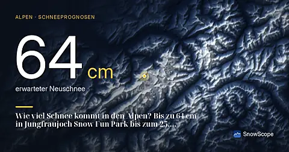
Bis 25. November werden 64 cm Neuschnee am Jungfraujoch Snow Fun Park erwartet. Daten vom 22. November.

Der Mölltaler Gletscher über Flattach: übliche Schneehöhe im Tal, an der Mittelstation und am Gipfel aus 46 vergangenen Wintern, vom ersten Schnee im September bis zum Skifahren im Mai.


Alpine Tagespässe ab 36 EUR: neun Skigebiete im Vergleich nach Preis, Pistenkilometern und dem Schnee, den sie normalerweise bieten, um den besten Skitag für dein Geld zu finden.

Sechs Tage Skifahren ab 191 EUR: Wir haben zehn günstige Skiwochen in Europa nach Preis sortiert und dann 46 vergangene Winter geprüft, um zu sehen, wo der Schnee zuverlässig ist.

Zermatt hat heute in den oberen Höhen 47 cm, 690% über dem November-Median. Die 0°C-Grenze bleibt bis Freitag über 2.200 m.

Alpen-Schneeprognose 18. November: 110 cm erwartet in Orelle, 105 cm in Les Grands Montets. Bester Schnee kommt Donnerstag und Freitag.
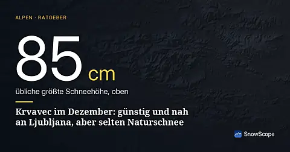
Krvavec auf Mittelhöhe hat am 15. Dezember in 46 Wintern typisch 13 cm Schnee, aber in 11 davon blanken Boden. Tagesticket EUR 47.

Skifahre auf 157 km markierten Pisten in Serre Chevalier, wo die Bergspitze bis Mitte Dezember eine 100 %ige Schneewahrscheinlichkeit hat.

Turracher Höhe hat am 15. Dezember typischerweise 23 cm in der Mittellage, doch nur 39% der Winter erreichen dort Mitte Dezember 30 cm. Daten vom 13. November 2026.

Hochkar auf Mittelhöhe hat am typischen 15. Dezember 38 cm, und in 63 % der Winter gab es in dieser Woche 30 cm oder mehr. Tageskarten ab EUR 32,90 an ruhigen Tagen.

Idre Fjälls Dezember-Schneechancen verbessern sich nach Mitte des Monats deutlich. Am 13. November liegt die typische Schneehöhe auf Mittelhang am 15. Dezember bei 32 cm.

Zehn europäische Skigebiete im Ranking für den Dezember, angeführt von Les 2 Alpes mit 75 cm Schnee auf mittlerer Höhe.

Boí Taüll startet auf 2039 m und schlägt Baqueira Beret beim Preis für den Tagesskipass, obwohl der Schnee Anfang Dezember Geduld erfordert.

Sälen im Dezember: 28 cm an einem typischen 15. Dezember und 48 % der Winter mit 30 cm Mitte Dezember, weniger als in den 1980ern; Trysil nebenan schneidet besser ab.

Orcières Merlette bietet eine hohe Basis auf 1.826 m und einen 6-Tage-Pass ab 227 EUR, was es zu einer zuverlässigen Wahl für einen Skiurlaub im Dezember macht.

Lohnt sich Alpe d'Huez für Dezember 2026? Wir prüfen die Schneechancen, den Startpreis von 58,00 EUR und vergleichen es mit Les 2 Alpes.

Sloweniens Skipässe sind die günstigsten (Krvavec 205 EUR für 6 Tage), doch Naturschnee im Dezember ist dort selten; Lachtal, Hochkar und Mölltaler Gletscher schneiden besser ab.

Cauterets bietet 25 km Pisten für 46 EUR, aber unsere Schnee-Historie zeigt, dass die besten Chancen auf eine Schneedecke in der letzten Dezemberwoche liegen.

Lachtal kostet EUR 62 pro Tag, Kinder unter 7 Jahren fahren kostenlos. Die Mittelbahn hatte ab Dezembermitte in 72 % der Jahre 30 cm oder mehr. Schneehöhe vom 13. November 2026.

Fahre diesen Dezember auf den 131 km Pisten der Forêt Blanche mit einem 6-Tage-Pass für 298 EUR.

Der 6-Tage-Pass in Ruka kostet EUR 265. Die Schneeaussichten steigen von 39% Anfang Dezember auf 85% in der Weihnachtswoche. Plane ab Mitte des Monats.
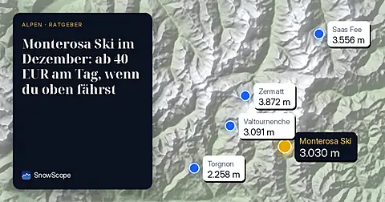
Bei Monterosa Ski kostet der Tagespass online 40,00 bis 71,00 EUR. Im Dezember liegt der Schnee oben: üblich 124 cm auf 3.030 m, 6 cm auf 1.207 m.

Am 15. Dezember auf Fellhorn/Kanzelwand: 63 cm auf 1965 m Gipfel, 30 cm am Berg, nur 10 cm auf 918 m Tal. Plane entsprechend.

Plane deinen Dezember-Trip 2026 nach Les Orres, indem du die wöchentlichen Skipasspreise mit unserer Schneehistorie aus 46 vergangenen Wintern vergleichst.

Hemavans Mittelhöhe hat am typischen 15. Dezember 82 cm Schnee. In allen 46 Wintern gab es Mitte Dezember 30 cm oder mehr. Daten vom 13. November 2026.
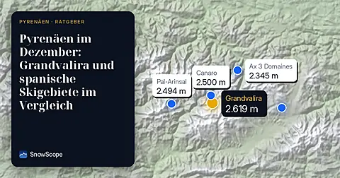
Vergleiche Grandvalira und spanische Skigebiete im Dezember 2026 bezüglich Schneehöhen, Lift-Höhen und Preisen ab 49,00 EUR.

Pitztaler Gletscher hält Dezemberschnee besser als die meisten Alpengebiete: 87 cm auf Mittelstufe Mitte Dezember, jeder Winter der letzten Jahre über 30 cm. Datenstand 13. November 2026.
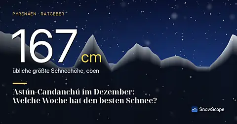
Für eine günstige Skiwoche mit der Familie im Dezember in Astún-Candanchú solltest du Ende Dezember anpeilen, wenn die oberen Pisten in 67 % der vergangenen Winter guten Schnee haben.

Nur Zugspitze und oberes Fellhorn halten zuverlässig 30 cm bis Mitte Dezember. Tiefere bayerische Berge sind günstiger, aber viel unsicherer. Daten vom 13. November 2026.

Puy-Saint-Vincent bietet einen 44 EUR Erwachsenen-Tagespass und soliden Dezember-Schnee in der Höhe, hier im Vergleich zum großen Nachbarn Serre Chevalier.

Oppdals Talstation hat am typischen 15. Dezember 60 cm Schnee, in 93% der Winter liegen Mitte Dezember mindestens 30 cm. Daten aus 46 Wintern.

Grimentz-Zinal bietet 71 km Pisten und verlässlichen Schneesicherheit in großer Höhe für Ihre Dezember-Reise, mit 6-Tages-Pässen für CHF 339,00.

Österreich vor Weihnachten: Galtür 258 EUR und Kühtai 269 EUR für 6 Tage, mit 30 cm in über 90 % der Winter; Gletscher kosten mehr, kleine Hügel sind ein Risiko.
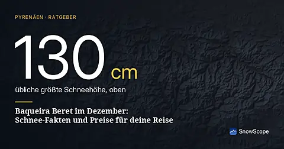
Planst du eine Reise nach Baqueira Beret im Dezember? Sieh dir unsere Schnee-Historie an, Ticketpreise ab 70,00 € für einen Tag und den Vergleich zu Astún-Candanchú.

Wir bewerten französische Skigebiete nach der Schneewahrscheinlichkeit im Dezember und den Skipasspreisen, beginnend bei 36,00 EUR für einen Tagespass für Erwachsene in Les Karellis.
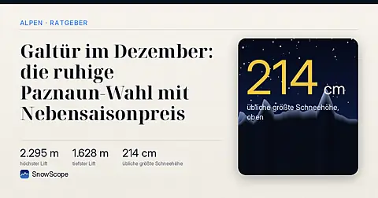
Galtürs Mittelstation hält am typischen 15. Dezember 55 cm. Nebensaison-Skipässe kosten EUR 55,50 bis 18. Dezember. Daten aus 46 Wintern, 1980–81 bis 2025–26.

Geilos Mittellage bleibt in 96% der Dezember-Winter befahrbar. Typische Schneehöhe am 15. Dezember: 42 cm Tal, 57 cm Mitte, 68 cm Gipfel. Tageskarte ab NOK 590.

Grandvalira wird oft als günstiges Skigebiet für Dezember verkauft, doch der Naturschnee an der Talstation liegt in den vergangenen Wintern im Schnitt bei nur 9 cm.

Am 15. Dezember zeigt Hemsedal 32 cm in der Talstation, 70 cm auf Mittelberg und 106 cm am Gipfel. Die Höhe ist entscheidend.
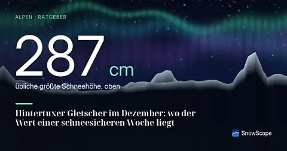
Am 15. Dezember hat Hintertux auf 3245 m 98 cm Schnee in 46 Wintern Geschichte. Jeden Winter gab es in der Woche vor Weihnachten dort oben 30 cm oder mehr.

Vergleiche die Schneechancen im Dezember und geprüfte Skipasspreise ab 40,00 EUR in italienischen Skigebieten für deinen Wochenendtrip mit dem Auto.

Kühtais Basis auf 1939 m bleibt im Dezember zuverlässig schneesicher. Am 15. Dezember typischerweise 60 cm in der Basis, 72 cm auf Mittelhöhe, 112 cm oben. Nebensaison-Sechstagespass EUR 269 bis 18. Dezember.
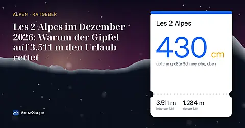
Les 2 Alpes reicht bis auf 3.511 m für viel Schnee im Dezember 2026, mit einem 6-Tage-Skipass für Erwachsene für 266,50 EUR.

Les Karellis bietet 45 km Pisten und einen 6-Tage-Skipass für Erwachsene für 191,00 EUR mit einer 98 %igen Schneewahrscheinlichkeit auf mittlerer Höhe Ende Dezember.
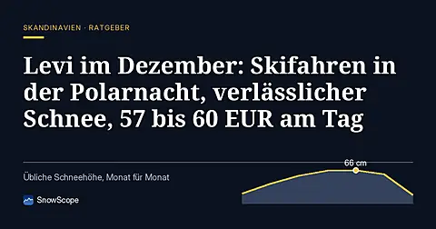
Levis Dezemberschnee hat sich im Laufe der Zeit verfestigt. Letzte 15 Winter: 100 % der Weihnachtswochen hatten 30 cm oder mehr. Typische Tiefe 15. Dezember: 38 cm. Daten 13. November 2026.

Fahr Ski in Livigno für 51,50 EUR pro Tag vor dem 18. Dezember, wenn der Schnee am Gipfel in 100 % der vergangenen Winter 30 cm erreicht.
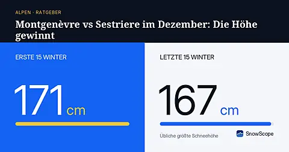
Montgenèvre hat im Dezember üblicherweise 56 cm Schnee an der Talstation und bietet Wochenendfahrern damit eine bessere Schneelage als Sestriere auf der anderen Seite der Grenze.
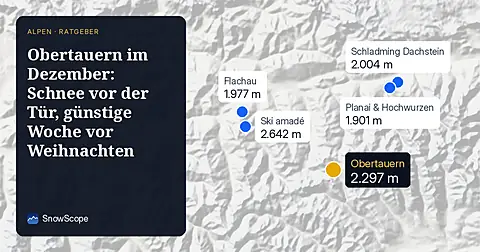
Skifahren in Obertauern im Dezember: 43 cm an einem typischen 15. Dezember an der Mittelstation, 6-Tage-Skipass vor Weihnachten 331 EUR.

Pila oberhalb von Aosta bietet einen günstigen Tagesskipass für 60,00 EUR und zuverlässigen Schnee im Dezember auf den oberen Pisten.

Die Lifte in Saas-Fee erreichen 3.556 m, wo unsere Schnee-Historie zeigt, dass 100 % der vergangenen Winter bis Mitte Dezember mindestens 30 cm Schnee hatten.

Schneetiefe in Mittelhöhe erreicht in 83–100 % der Dezember-Winter in Skandinavien 30 cm. Festpreise in Finnland; dynamische Preise in Norwegen und Schweden. Daten aus 46 Wintern, 13. November 2026.

Entdecke die ruhigen Pisten von St-Luc Chandolin, wo die Schneehöhe auf mittlerer Höhe in 98 % der Winter Ende Dezember 30 cm erreicht.

Trysil im Dezember: 44 cm an der Mittelstation an einem typischen 15. Dezember, 83 % der Winter mit 30 cm Mitte Dezember; die Preise sind dynamisch, also früh buchen.
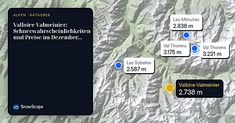
Valloire-Valmeinier bietet 131 km Pisten und eine 98 % Chance auf 30 cm Schnee auf halber Höhe bis Mitte Dezember.

Zugspitze-Gletscher hat am 15. Dezember typischerweise 122 cm Schnee auf 2.627 m; Garmisch-Classic-Spitze 57 cm. Gleicher Preis, unterschiedliche Schneedecke. Daten aus 46 Wintern.

Mölltaler Gletscher im Dezember: 66 cm am tiefsten Lift (2103 m) und 128 cm an der Mittelstation an einem typischen 15. Dezember; 6-Tage-Skipass Nebensaison 332 EUR.

Kannst du dich als vorsichtiger Anfänger im Dezember auf Courmayeur verlassen, wenn es auf halber Höhe in unseren vergangenen Wintern im Schnitt 60 cm Schnee gibt?

Schneebericht in den Alpen, 14. November. Wenn du heute den meisten Schnee in den Alpen willst, schau nach Saint-Luc (Schweiz): etwa 110 cm weit …

Buche 15.–21. Dezember in Åre für die besten Schneechancen vor den Weihnachtsmassen. 89 % der Winter hatten in dieser Woche 30 cm auf Mittelhöhe. Daten vom 13. November 2026.

Von jetzt bis zum 16. November erwarten wir 13 in (34 cm) in Bear Valley, 13 in (34 cm) in Dodge Ridge und 13 in (33 cm) in Badger Pass. Ein Wort zu …

Was du anziehst, was du einpackst und wann du fährst, Skigebiet für Skigebiet. …

Die Schneefläche ist von 39.090 km² am 11. November auf heute 76.100 km² gewachsen, und unsere Prognose ergibt 57.910 km² am 16. November: Mehr Boden …
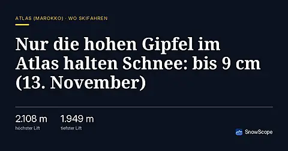
Die Skigebiete im Atlas halten heute keinen Schnee auf ihren Pisten. Schnee ist nur auf den höchsten Gipfeln gespeichert: etwa 40 km² Boden, bis zu …
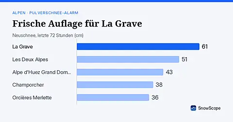
Neuschnee in La Grave: 61 cm in den letzten 72 Stunden, davon 3 cm in den letzten 24. Unser Schneemodell sieht jetzt etwa 78 cm in den oberen Hängen. …
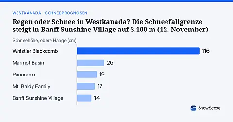
Zwischen 1.380 m und 3.410 m: Dort sieht unsere Prognose die Nullgradgrenze in Westkanada in den nächsten Tagen. In den wärmsten Stunden steigt die …

Die Karten von heute blicken zwei Wochen voraus in den Pyrenäen, 13. November bis 26. November. Sie stammen aus die beiden Prognosen, die zwei …

Schneebericht im Atlas (Marokko), 12. November. Skigebiete im Atlas heute: kein Schnee auf den Pisten. Schnee nur auf den höchsten Gipfeln: etwa …


In 24 von 46 Wintern hatten die Skigebiete auf der italienischen und südfranzösischen Seite der Alpen einen relativ stärkeren Winter als die Nordseite. Die Grafik, die großen Jahre und das Wetter dahinter.

Schnee im Dezember hängt vor allem von der Höhe ab. 46 vergangene Winter in 676 Alpen-Skigebieten zeigen, wie viel Schnee am 1., 15. und 22. Dezember zu erwarten ist, von unter 1.200 m bis über 2.400 m.

Ein günstiger 3-Tage-Plan am Comer See im Dezember mit echten Preisen 2026-27: Züge, Schiffe, Standseilbahn und ein Skitag in Piani di Bobbio oder Madesimo, die Ersparnis gegenüber Cortina und die Chance auf Schnee zu Weihnachten.

Vail in Zahlen: übliches Maximum von etwa 64 in (162 cm) an der Mittelstation in 46 vergangenen Wintern, März am schneereichsten, dazu Gelände, Anreise, Sicherheit.

Zermatt in Zahlen: wo der Schnee hält, die sichersten Monate und die Anreise ins autofreie Dorf, aus 46 vergangenen Wintern.

Steamboat, Colorado, für Familien: was für Kleinkinder, Schulkinder, Teenager und Eltern passt, mit dem Schnee aus 46 vergangenen Wintern auf drei Höhen.

Ist Verbier etwas für Anfänger? Wann ist der Schnee am besten? Wie kommt man hin? Antworten zu den 4 Vallées und 46 vergangenen Wintern.

Wie du den ersten Tag in Park City Mountain, Utah, verbringst und wann du fährst: Unsere Schneehistorie gibt etwa 71 in (180 cm) als übliches Maximum an der Mittelstation in 46 vergangenen Wintern.

Die Sellaronda ab Wolkenstein (Sëlva) in Gröden: Grödner Joch, Campolongo, Pordoi und Sellajoch der Reihe nach, mit unserer Schneehistorie von 46 vergangenen Wintern.

Mt Baker, Washington: etwa 133 in (337 cm) übliches Maximum an der Mittelstation in 46 vergangenen Wintern, ein Schneefall-Weltrekord, keine Unterkunft am Berg.

Val d'Isère und der Espace Killy für Anfänger, Fortgeschrittene und Könner, mit dem Schnee aus 46 Wintern auf drei Höhen.

Mammoth Mountain nach Saison planen: etwa 93 in (235 cm) übliches Maximum an der Mittelstation in 46 vergangenen Wintern, März am tiefsten, lange Frühjahre, schwankende Winter.

Kitzbühel ist berühmt und tief gelegen. Was 46 vergangene Winter über den Schnee auf 762 m, 1.377 m und 1.993 m sagen, was sich geändert hat und welche Wochen die sicherere Wahl sind.

Jackson Hole hält Schnee bis tief in den Frühling auf seinen hohen Gipfeln. Wir haben sechs verbreitete Aussagen gegen 46 Winter Schneegeschichte überprüft. Daten von November 2026.

Zehn praktische Punkte für eine Skireise nach Livigno: Anreise, Kälte, zollfreie Geschäfte, die zwei Talseiten und die beste Schneezeit, aus 46 vergangenen Wintern unserer Schneehistorie.

Im Winter nach Telluride, Flughafen für Flughafen: Telluride Regional, Montrose, die Fahrt auf dem Highway 145 mit Colorados Traktionsgesetz und die kostenlose Gondel nach Mountain Village.
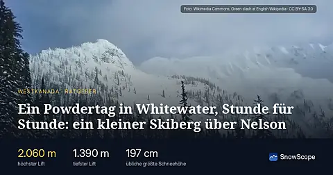
Whitewater liegt in einer durchgehend verschneiten Mulde der Selkirks in der Nähe von Nelson. In der Mittelhöhe erreichen typische Gipfel 165 cm. So verläuft ein Sturmtag auf einem Skiberg mit 670 m Höhenunterschied.

Les Arcs hat vier Dörfer in verschiedenen Höhen, jedes mit eigener Schneelage und Charakter. Wähle das Richtige für deinen Winter.

Snowbird liegt am oberen Ende des Little Cottonwood Canyon. Wir erklären die Haftungsregel, den Straßenzustand, den Skibus und warum die Anfahrt für die Schneehöhe wichtig ist.

Whistler Blackcomb für jedes Können, mit unserer Schneehistorie: etwa 370 cm übliches Maximum an der Mittelstation in 46 vergangenen Wintern, März und April am tiefsten.

Von den Walsern zum Weißen Ring: die Daten, die Lech Zürs geprägt haben, danach unsere Schneehistorie damals und heute, die ersten fünfzehn von 46 vergangenen Wintern gegen die letzten fünfzehn.
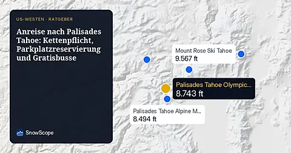
Palisades Tahoe Olympic Valley liegt 42 Meilen von Reno entfernt. Der Winterzugang hängt von Schneeketten-Regelungen, Parkplatzbuchungen und der Vorhersage ab. Daten von 8. November 2026.

Eine praktische Packliste für Stowe, Vermont: Schichten, Gesichtsschutz, Skibrille, scharfe Kanten und Wärmepads, verknüpft mit dem Schnee aus 46 vergangenen Wintern am Mount Mansfield.

Skifahren in Lake Louise zu Saisonbeginn: warum es früh losgeht, wie der Schnee im November und Dezember in 46 vergangenen Wintern meist aussah und wie man auf dünner Unterlage fährt.
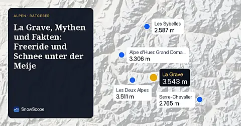
Was an La Grave stimmt, dem Freeride-Berg unter der Meije: Gelände, Sicherheit, Schnee pro Monat und Trend, aus 46 vergangenen Wintern.

Big Sky, Montana, anschaulich: 5.850 Acres unter dem Lone Peak, und Schnee, der in 46 vergangenen Wintern nahe dem Gipfel etwa fünfmal so tief war wie im Tal.

Grandvalira liegt in Andorras Haupttal. Du erreichst es auf der Straße aus Spanien oder Frankreich, mit Flughäfen 176–260 km entfernt und kostenlosem Parken in einigen Sektoren.
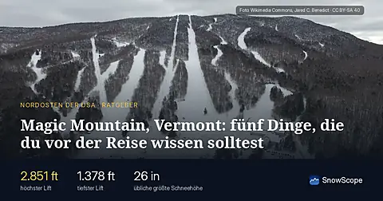
Magic Mountain Ski Area im südlichen Vermont liegt auf dünnem Naturschnee. Die maximalen Tiefen an der Basis betragen 21 in (54 cm); an der Spitze 26 in (67 cm). Daten aus 46 vergangenen Wintern, November 2026.

Fahr Revelstokes ganzen Höhenunterschied erst im Kopf: der Schnee am Gipfel, an der Bergmitte und unten im Tal in 46 vergangenen Wintern, und wann jeder Teil am besten ist.
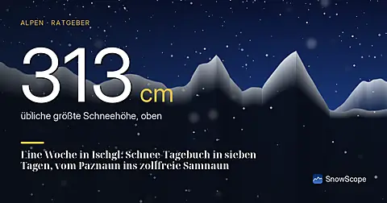
Sieben Tage in der Silvretta Arena, einer nach dem anderen: wo der Schnee liegt, wann man nach Samnaun fährt und was 46 vergangene Winter über Ischgls Schnee auf drei Höhen sagen.

Aspen Snowmass im Vergleich: Snowmass hat etwa 75 in (190 cm) übliches Maximum an der Mittelstation in 46 vergangenen Wintern, Aspen Mountain etwa 69 in (174 cm).

Gourette und Cauterets im Vergleich: Höhen, üblicher Schnee pro Monat, die besten Wochen und die Anreise, aus 46 vergangenen Wintern.

Mad River Glen, Vermont: Naturschnee, etwa 30 in (75 cm) übliches Maximum an der Mittelstation in 46 vergangenen Wintern, Februar am tiefsten. Drei Pläne für einen Tag dort.

Banff Sunshine Village Monat für Monat: etwa 100 cm an der Mittelstation in einem üblichen März in 46 vergangenen Wintern, oben ist der April am tiefsten, Saison bis Ende Mai.

Saas-Fee liegt auf 1.780 m in einem autofreien Dorf. Du erreichst es mit dem Zug nach Visp und dann PostBus 511, oder du fährst über Lötschberg, Furka, Simplon oder das Rhônetal. Daten vom 8. November 2026.

Altas Mittelhang erreicht normalerweise etwa 276 cm. Unsere Schneegeschichte aus 46 Wintern beantwortet, wann du kommen solltest, welche Höhe zu dir passt, und warum die Straße wichtig ist. Daten vom 7. November 2026.

Alpe d'Huez liegt zur Sonne. So plant man den Tag nach Uhrzeit und Höhe, mit dem Schnee von 46 vergangenen Wintern von den tiefen Dörfern bis zum Pic Blanc.

Baqueira-Beret liegt im Val d'Aran, auf der Atlantikseite der Pyrenäen. Was das für den Schnee bedeutet, geprüft an 46 vergangenen Wintern im Vergleich mit La Molina, und wann man fahren sollte.

Bonneval-sur-Arc liegt auf 1.794 m im hohen Arc-Tal, im Winter durch den Iseran abgeschnitten. Die Schneehöhe reicht von 99 cm in der Talstation bis 335 cm am Berg. Daten aus 46 vergangenen Wintern, November 2026.
So verbringst du den ersten Skitag in Chamonix, von den Grands Montets über Argentière bis zur richtigen Stunde für jeden Hang, mit 46 Wintern Schneedaten.

Cortina d'Ampezzo auf drei Arten: Tofana, Faloria-Cristallo und Cinque Torri-Lagazuoi, mit 46 Wintern Schneedaten auf drei Höhen.

Chantarella, Marguns, Piz Nair, White Turf: die Wörter, die man in St. Moritz hört, erklärt, und was 46 vergangene Winter unserer Schneehistorie zu jeder Höhe der Corviglia sagen.

Davos und Klosters teilen sich sechs Skiberge. Ein Plan Tag für Tag, beginnend auf der Parsenn, mit dem, was 46 vergangene Winter unserer Schneehistorie über ihre Höhen sagen.

Wann Courchevel und die 3 Vallées buchen, welches Dorf wählen und wo der Schnee hält, geplant aus 46 vergangenen Wintern.

St. Anton und Ski Arlberg durch den Winter: die übliche Schneehöhe pro Monat auf drei Höhen, aus 46 vergangenen Wintern.
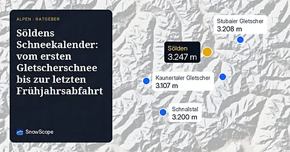
Ein Schneejahr in Sölden, Phase für Phase: wann die Gletscher weiß werden, das Weltcup-Wochenende, die lange Wintermitte und die Frühjahrswochen, aus 46 vergangenen Wintern auf drei Höhen.

Ein praktisches Notizbuch zu Oukaïmeden im Hohen Atlas: wann der Schnee meist kommt, wie viel, welche Hänge und die Anreise ab Marrakesch.

Unsere Prognose hat die Nullgradgrenze in den Pyrenäen in den kommenden Tagen zwischen 2.610 m und 3.840 m. In der wärmsten Zeit des Tages steigt die …